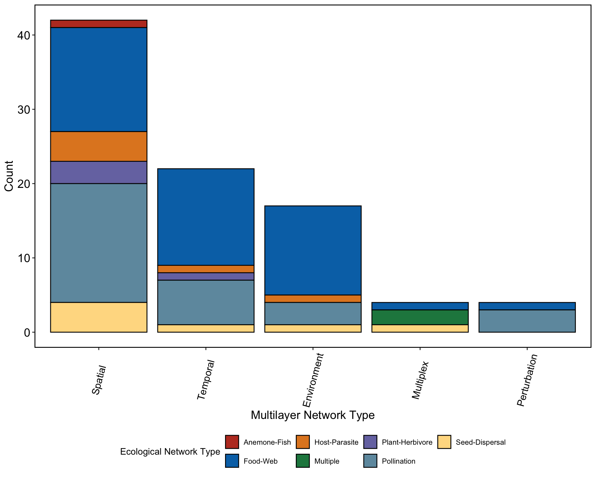

Working with included data sets
library(emln)
library(igraph)
library(bipartite)
library(magrittr)
library(ggplot2)
library(readr)
library(tibble)
library(dplyr)
library(readr)
library(stringr)
library(ggsci)
library(ggbreak)
library(ggpubr)About the data sets
The package includes 78 data sets of multilayer networks, collected from different sources. This collection of data is highly useful for comparative analysis and for practicing workflows. How data were collected and organized is described in the paper.
The data includes 5 types of multilayer networks:
## multi_type count
## 1 Spatial 42
## 2 Temporal 22
## 3 Environment 17
## 4 Perturbation 4
## 5 Multiplex 4These are divided into 7 types of ecological interaction networks:.
## eco_type count
## 1 Food-Web 35
## 2 Pollination 25
## 3 Seed-Dispersal 7
## 4 Host-Parasite 5
## 5 Plant-Herbivore 3
## 6 Multiple 2
## 7 Anemone-Fish 1Here is a visual summary:

The data is distributed globally:

Browsing the data
You can browse through the data sets using view_emln()
in RStudio. The function will open a user interface in the viewer panel.
To search for a network with a certain set of parameters, you can use
search_emln(). Here are a few examples.
search_1 <- search_emln(ecological_network_type = 'Host-parasite')
names(search_1)## [1] "network_id" "network_name" "ecological_network_type" "multilayer_network_type" "state_nodes"
## [6] "weighted" "directed" "interlayer" "layer_num" "node_num"# Show some of the columns
search_1 %>% select("network_id","network_name","ecological_network_type","multilayer_network_type","layer_num")## # A tibble: 6 × 5
## # Groups: network_id, network_name [5]
## network_id network_name ecological_network_type multilayer_network_type layer_num
## <dbl> <chr> <chr> <chr> <dbl>
## 1 7 emln7_environment_rejmanek_stary_1979 Host-Parasite Environment 4
## 2 23 emln23_spatial_canadian_fish_parasite Host-Parasite Spatial 12
## 3 33 emln33_spatial_hadfield_2013 Host-Parasite Spatial 51
## 4 53 emln53_spatial_slovakia Host-Parasite Spatial 120
## 5 57 emln57_spatial_temporal_kolpelke_2017 Host-Parasite Spatial 1532
## 6 57 emln57_spatial_temporal_kolpelke_2017 Host-Parasite Temporal 1532search_2 <- search_emln(ecological_network_type = 'Pollination', layer_number_minimum = 15)
search_2 %>% select("network_id","network_name","ecological_network_type","multilayer_network_type","layer_num")## # A tibble: 6 × 5
## # Groups: network_id, network_name [5]
## network_id network_name ecological_network_type multilayer_network_type layer_num
## <dbl> <chr> <chr> <chr> <dbl>
## 1 2 emln2_environment_benadi_jae_2013 Pollination Environment 69
## 2 64 emln64_temporal_caradona_2020 Pollination Temporal 86
## 3 71 emln71_temporal_perturbation_kaiser_bunbury_2009 Pollination Temporal 24
## 4 71 emln71_temporal_perturbation_kaiser_bunbury_2009 Pollination Perturbation 24
## 5 72 emln72_temporal_ponisio_2017 Pollination Temporal 141
## 6 78 emln78_temporal_zackenberg_2013 Pollination Temporal 163# Networks with state node attributes
search_emln(state_nodes = TRUE)## # A tibble: 12 × 10
## # Groups: network_id, network_name [11]
## network_id network_name ecological_network_t…¹ multilayer_network_t…² state_nodes weighted directed interlayer layer_num node_num
## <dbl> <chr> <chr> <chr> <chr> <lgl> <lgl> <lgl> <dbl> <dbl>
## 1 6 emln6_environment_kohler_2011 Pollination Environment TRUE TRUE FALSE FALSE 3 31
## 2 23 emln23_spatial_canadian_fish_par… Host-Parasite Spatial TRUE TRUE FALSE FALSE 12 311
## 3 28 emln28_spatial_dicks_2002 Pollination Spatial TRUE TRUE FALSE FALSE 2 102
## 4 30 emln30_spatial_elberling_1999 Pollination Spatial TRUE FALSE FALSE FALSE 2 241
## 5 33 emln33_spatial_hadfield_2013 Host-Parasite Spatial TRUE TRUE FALSE FALSE 51 327
## 6 36 emln36_spatial_joern_1979 Plant-Herbivore Spatial TRUE FALSE FALSE FALSE 2 105
## 7 39 emln39_spatial_leather_1991 Plant-Herbivore Spatial TRUE FALSE FALSE FALSE 2 112
## 8 43 emln43_spatial_montero_2005 Pollination Spatial TRUE FALSE FALSE FALSE 3 173
## 9 51 emln51_spatial_primack_1983 Pollination Spatial TRUE FALSE FALSE FALSE 3 305
## 10 54 emln54_spatial_snow_b_k_snow_1988 Pollination Spatial TRUE TRUE FALSE FALSE 2 89
## 11 58 emln58_spatial_temporal_martins_… Plant-Herbivore Spatial TRUE TRUE FALSE FALSE 30 149
## 12 58 emln58_spatial_temporal_martins_… Plant-Herbivore Temporal TRUE TRUE FALSE FALSE 30 149
## # ℹ abbreviated names: ¹ecological_network_type, ²multilayer_network_type# Networks with interlayer links
search_emln(interlayer = TRUE)## # A tibble: 1 × 10
## # Groups: network_id, network_name [1]
## network_id network_name ecological_network_type multilayer_network_type state_nodes weighted directed interlayer layer_num node_num
## <dbl> <chr> <chr> <chr> <chr> <lgl> <lgl> <lgl> <dbl> <dbl>
## 1 17 emln17_multiplex_traveset_2020 Multiples Multiplex FALSE TRUE FALSE TRUE 4 129Loading a network
We load the spatial multilayer network (network_id = 38) that comes with the package. This is a spatial seed-Dispersal network (collected from Web of Life). The network has five layers and 22 physical nodes, with a total of 84 interactions that are all intralayer, undirected, and weighted. There are no interlayer interactions recorded for this network.
d38 <- load_emln(38)
names(d38)## [1] "nodes" "layers" "extended" "extended_ids" "state_nodes" "description" "references"d38$layers## # A tibble: 7 × 10
## layer_id name location latitude longitude years num_of_species num_of_interactions connectance layer_name
## <int> <chr> <chr> <dbl> <dbl> <chr> <int> <int> <dbl> <chr>
## 1 1 Amami-Ohsima_Island Amami-Ohsima Island, Japan 28.4 129. 1996… 719 1125 0.017 layer_1
## 2 2 Ashu Ashu, Kyoto, Japan 35.3 136. 1984… 768 1193 0.019 layer_2
## 3 3 Kibune Kibune, Kyoto, Japan 35.2 136. 1984… 997 1920 0.019 layer_3
## 4 4 Kyoto_City Kyoto City, Japan 35.0 136. 1985… 431 773 0.022 layer_4
## 5 5 Mt.Kushigata Mt. Kushigata, Yamanashi Pref., Japan 35.6 138. 1990… 456 871 0.026 layer_5
## 6 6 Mt.Yufu Mt. Yufu, Japan 33.4 132. 2001 393 589 0.02 layer_6
## 7 7 Nakaikemi_marsh Nakaikemi marsh, Fukui Prefecture, Jap… 35.6 136. 1994… 259 431 0.035 layer_7head(d38$extended)## layer_from node_from layer_to node_to weight type
## 1 layer_1 Castanopsis_sieboldii layer_1 Stomorhina.obsoleta. 3 pollination
## 2 layer_1 Castanopsis_sieboldii layer_1 Hylaeus.insularum. 1 pollination
## 3 layer_1 Castanopsis_sieboldii layer_1 Lygocoris.sp1.M_PL_044 1 pollination
## 4 layer_1 Castanopsis_sieboldii layer_1 Mordellina.tsutsuii. 1 pollination
## 5 layer_1 Castanopsis_sieboldii layer_1 Lasioglossum.subopacum. 19 pollination
## 6 layer_1 Castanopsis_sieboldii layer_1 Anaspis.shibatai. 15 pollination